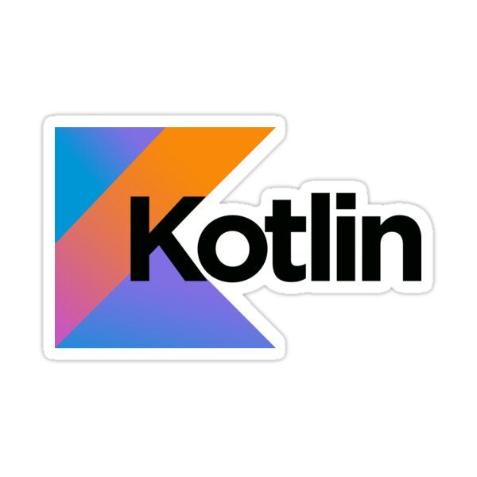
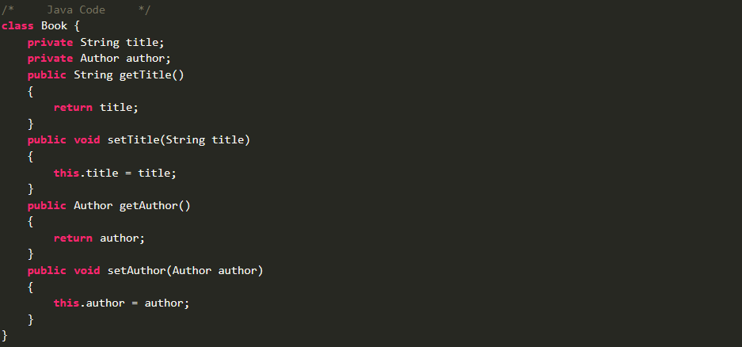
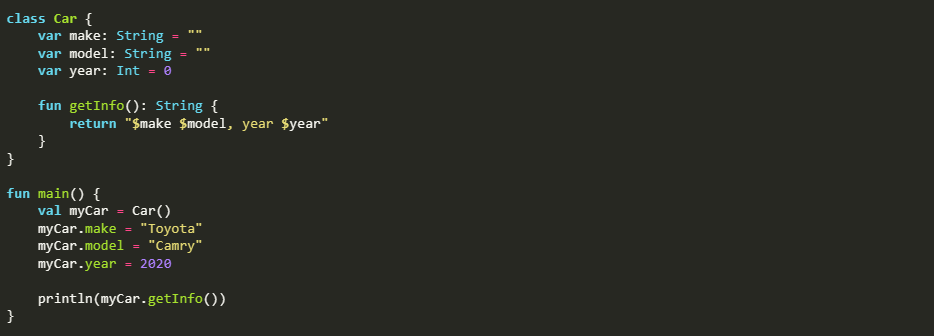

Kotlin представляет современный, статически типизированный
и один из самых быстроразвивающихся языков
программирования, созданный и развиваемый
компанией JetBrains. Kotlin можно использовать
для создания самых разных приложений.

Самым популярным направлением, где применяется Kotlin, является прежде всего разработка под ОС Android. Причем настолько популярным, что компания Google на конференции Google I/O 2017 провозгласила Kotlin одним из официальных языков для разработки под Android (наряду с Java и C++), а инструменты по работе с данным языком были по умолчанию включены в функционал среды разработки Android Studio начиная с версии 3.0.
Ключевые особенности Kotlin:
Статическая типизация – Это характеристика языка программирования, которая означает, что тип каждой переменной и выражения известен во время компиляции. Хотя это статически типизированный язык, он не требует от вас явного указания типа каждой объявляемой вами переменной.
Классы данных– В Kotlin существуют классы данных, которые приводят к автоматической генерации шаблонов, таких как equals, hashCode, toString, методы получения / установки и многое другое.

В Kotlin классы и объекты используются для представления объектов в реальном мире. Класс — это схема для создания объектов (определенной структуры данных), предоставления начальных значений состояния (переменных или полей-членов) и реализаций поведения (функций или методов-членов).

Наиболее фундаментальным типом данных в Kotlin является примитивный тип данных, а все остальные являются ссылочными типами, такими как array и string . Java должна использовать оболочки (java.lang.Целое число) для примитивных типов данных, которые должны вести себя как объекты, но у Kotlin уже есть все типы данных как объекты.
В Kotlin существуют разные типы данных:
Целочисленный тип данных
Тип данных с плавающей запятой
Логический тип данных
Символьный тип данных
Операторы - это специальные символы, которые выполняют различные операции с операндами. Например, + и – это операторы, которые выполняют сложение и вычитание соответственно. Как и Java, Kotlin содержит различные типы операторов.
Арифметический оператор
Оператор отношения
Оператор присваивания
Унарный оператор
Логический оператор
Побитовый оператор
Система типов Kotlin направлена на устранение опасности нулевой ссылки в коде, потому что это ошибка стоимостью в миллиард долларов. Исключения NullPointerExceptions выдаются программой во время выполнения и иногда вызывают сбой приложения или системный сбой.
Если кто-либо программировал на Java или другом языке, использующем концепцию нулевой ссылки, то он, должно быть, сталкивался с NullPointerException в коде. Компилятор Kotlin также выдает исключение NullPointerException, если он обнаружил какую-либо нулевую ссылку без выполнения каких-либо других инструкций.
Легко ли освоить Kotlin?
Да, Kotlin обычно считается простым в освоении. Он имеет краткий синтаксис, современные функции и совместим с Java, что делает его удобным для начинающих.
Java или Kotlin проще?
Kotlin часто считают более простым из-за его краткого синтаксиса, современных функций и бесшовной совместимости с Java. Однако простота изучения может варьироваться в зависимости от индивидуальных предпочтений и предыдущего опыта.
Какова основная концепция Kotlin?
Kotlin - это статически типизированный язык программирования общего назначения с выводом типов. Он разработан для полного взаимодействия с Java, а байт-код JVM, сгенерированный Kotlin, на 100% совместим с байт-кодом Java. Kotlin - это полнофункциональный язык, который поддерживает объектно-ориентированное программирование, функциональное программирование и метапрограммирование.